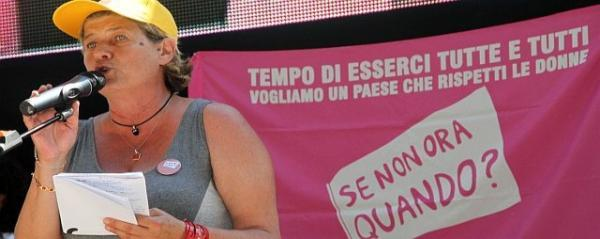

|
|

تسونامی صورتی زنان در ایتالیا برای تغییر/صبری نجفی
يكشنبه16 مرداد 1390
تولد دوباره جنبش زنان ایتالیا
ما زنان در مرکز این کشور
یک تسونامی صورتی، می خواهیم کشور را تغییر دهیم
یک موج در سی ینا، کشور را تغییر خواهیم داد
اگر حالا نه ،پس کی؟
تغییر برای برابری:سر تیترهای بالا را روزنامه های ایتالیایی در روزهای ۹و ۱۰ جولای در شروع جنبش نوین زنان ایتالیا نوشتند . ایتالیا آن چند روز داغ و داغ تر از همیشه شده بود شوق و آرزوی تغییر زنان ایتالیایی را وا داشته بود که از کار ،دریا و مسافرتهای ماه جولای خود دست بکشند و دور هم جمع بشوند برای شروع یک جنبش جدید، جنبشی که هنوز شکل اصلی به خود نگرفته است ولی می رود که به یکی از حنبشهای بزرگ زنان ایتالیا تبدیل شود .جنبشی که با شکلی دیگر و با یک برگشت به خود و نگاهی دوباره به قوانین تیعیض آمیز که سالها تقریبا با بی تفاوتی نادیده گرفته شده بود، الان می خواهد با چنگ و دندان بدست بیاورد.

زنان ایتالیایی می خواهند که شرایطشان عوض شود و قبل از هر چیز می خواهند که کرامت خود را بازیابند و سهل انگاریها را سامان بخشند.
بعد از تظاهرات خود جوش ۱۳ فوریه ۲۰۱۰در مخالفت باسیاست برلوسکونی نخست وزیر کشور در استفاده از قدرتش برای بهره جویی از زنان و دخترکان و قول شغل های مهم دولتی به آنان و استفاده از کاخش برای جشنهای خصوصی با دخترکان زیر ۱۸ سال و همچنین شرایط نا مساوی زنان و مردان در کار برابر در مقابل حقوق کمتر به زنان و یا تعداد کمتر زنان شاغل نسبت به مردان وتعداد کمتر زنان شاغل در همه امور در جنوب کشور نسبت به مردان و دیگر شرایط نادرست، زنان ایتالیا بر آن شدند تا در روزهای ۹ و ۱۰ جولای در شهر سی ینا با قاطعیت جنبش جدید زنان را پایه ریزی کنند.

در روی پرده صحنه های تظاهرا ت ۱۳ فوریه می چرخد .یک میلیون زن در شهرهای مختلف ایتالیا در آن روز در تظاهرات شرکت کردند.زنان جوان ،پیر ،چاق ،لاغر .زنان ایتالیایی حتی در پایتخت های کشورهای دیگر جهان هم به خیابان رفتند و حالا این فیلم را که آنها خودشان همه کارهایش را کرده اند میبینند و بعد از ۵ ماه میخواهند در باره سازماندهی این جنبش حرف بزنند.
در اولین ساعتها با خواندن شعری در مورد زنان یک قسمت از فیلم زنان بدون مردان شیرین نشاط هنرمند معروف ایرانی هم به نمایش گذاشته شد.
لیندا سبادینی از موسسه ملی آمار از نابرابری حقوق مرد و زن در مقابل مدرک برابر سخن می گوید و از ۸۰۰،۰۰۰ زنی که با حاملگی مجبور به ترک کارشان هستند . این فصل جدید همکاری زنان آغاز شده همانهایی که قبل از همه به این همکاری اعتقاد پیدا کردند جوانان نسل نو ،روشنفکر ان ، بازنشسته ها و کسانی که دنبال کار می گردند و بدین ترتیب ۱۲۰ کمیته زنان Se non ora Quando ? اگر الان نه پس کی ؟بوجود آمد.
بنظر می امد که بیش از ۱۰۰۰ نفر به سی ینا نیایند ولی بیش از دو برابر امدند، با اتوبوس، قطار ،ماشین و از همه شهرها.کمیته ها مثل قارچ زیاد شدند سازمانهای مختلف زنان از شهرهای مختلف هم امدند. یک گروه بزرگ زنان باستان شناس و زنان از هر گروهی که توانسته بودند و حتی آنهایی که به عشق این جنبش بدون بستگی به گروهی آمده بودند.

کسانی که برنامه را پایه ریزی کرده بودند خیلی از کارشان خوشحال بودند . از زنان سیاسی، معاون پارلمان ایتالیا رزا بیندی ، از وزرای سابق لیویا تورکو، از نمایندگان مجلس و وکلای بنام جولیا بونجورنو هم آنجا بودند و همینطور از احزاب . کسی آنهارا دعوت نکرده بود ،آنها خودشان خواسته بودند که به این جنبش نو بپیوندند.
سوزانا کاموزو رییس اتجادیه کارگری ایتالیا از بنیان گزاران این جنبش، هم در ۱۳ فوریه و هم ۱۰ جولای از شرایط زنان کارگر سخن گفت و لزوم ایجاد این جنبش بدون حزب.
در یک بند رخت که برای آویزان کردن نوشته های زنان گذاشته شده بود یکنفر نوشته بود "بترسید بترسید جادوگر ها هم امده اند" که منظورش زنان مجلس و وزرای سابق بود.
علاوه بر همه مصاحبه ها یک گوشه سالن هم اختصاص داده شده بود به نقطه جی که جی اول حرف داد کشیدن به ایتالیایی است برای هر کس که حرفی برای گفتن داشت حتی اگر می خواست فریاد بزند . همه این مصاحبه ها ضبط و در یک کانال زنان پخش می شود تا از آنها استفاده شود.
بعضی ها میگویند این یک جنبش اجتماعی است و گروه دیگر اعتقاد دارد که یک جنبش سیاسی. این دو روز در شهر سی ینا یک کار بنیادی اتفاق افتاد.
"اگر الان نه پس کی ؟Se Non ora Quando" یک حزب نیست ولی یک قدرت است که میگوید که چه می خواهد و می تواند تغییر را بوجود بیاورد و می تواند روش حزب ها را هم عوض کند.
سوزانا کاموزو می گوید سیاست دولت سیاست زن ستیز است و باز می گوید که سیاست را به شکل های مختلف مبشود انجام داد و جنبش نوین زنان می خواهد که برنامه اش را از پایین شروع کند بدون هیچ الگوی از قبل تعیین شده گر چه هنوز حرف اصلی سازمان دادن است و دادن یک شکل پایدار به این جنبش که مثل یک ویروس واگیری است ولی واقعی است.
سوزانا کاموزو از سیاست دولت از اینکه بودجه ها را کم میکند که زنان بیشتر خانه نشین شوند برای بودن با فرزندانشان و برای ماندن با سالمندان نا خود کفا سخن می گوید و از مرخصی اجباری برای پدران حرف می زند.
در تمام دو روز نمایندگان کمیته ها و دیگر سخنگویان فقط سه دقیقه برای حرف زدن وقت داشتند ، بهمین دلیل خیلی ها توانستندحرف بزنند.
جولیا بونجورنو برای دفاع از حق طبیعی بارداری زنان می گوید که برای رسیدن زنان به حقوقشان می بایست برای آنان Women class actionگذاشت.
بنظر او زنان حتی برای بارداری که حق طبیعی آنهاست مجبورند بخاطر قوانینی که از آنان حمایت نمی کند زمان بارداری را به بالای ۴۰ سالگی بگذارند و این را نه تنها دلیل اختیار نمی داند بلکه به دلیل اجبار بخاطر قوانین تبعیض آمیز و نا برابر بین زن ومرد بر می شمرد.
در هر دو روز برنامه هیچ بحث جارو جنجالی بین سخنگوها و زنان شرکت کننده پیش نیامد چون جنبش زنان که در سی ینا متولد شد قرار نداشت با کسی دعوایی داشته باشد و نه حتی با زنان سیاستمدار.

یکی از زنان پارلمان می گوید که این جنبش اگر احزاب را به چالش نکشد توان خودش را برای تغییرات در کشور از دست خواهد داد و ادامه می دهد که مسئله اصلی رسیدن به قدرت است و !!!رسیدن به قدرت با نفرات زیاد ! برای اینکه اگر یک زن بدست سیاست تغییر می کند همه زنان با هم می تونند سیاست را تغییر بدهند.
دیالوگ بین زنان در سیاست و زنان در جنبش با آرامش پیش رفت چون هر دو می خواستند با قدرتشان دیگری را به جلو رهنمود باشند و این پیمانی بود که بطور سمبلیک بسته شد.
یکی از شرکت کنندگان می گوید .بهترین سیاست سیاستی است که از طریق جنبشها بوجود می آید و وظیفه ما جواب دادن با پیشنهادات خیلی پیشرفته است.
در باز گشت از این نشست دوروزه بعنوان یک زن ایرانی که هزاران شرایط نامساوی باعث شد که از ایران خارج شوم و سالها در این کشور زندگی کنم فکر می کردم، امروز خوشحالم که بی تفاوتیهای خواهران ایتالیاییم به یک عکس العمل خود جوش برای تغییر به برابری تبدیل شده و از اینکه دوباره به خیابانها آمدم تا صدای زنان را برای برابری به گوش مردم برسانم خوشحالم.
میدانم که زنان ایتالیا موفق خواهند شد چون چاره دیگری نیست همانطور که خواهرانم در ایران موفق خواهند شد، چاره دیگری هم برای زنان سرزمینم نیست! آینده از آن زنان و مردان برابر است در همه جا و ما از تجربه های هم درس می گیریم و هم صدا هستیم.